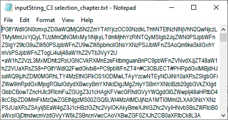
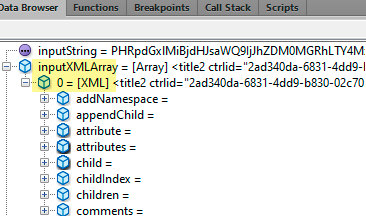
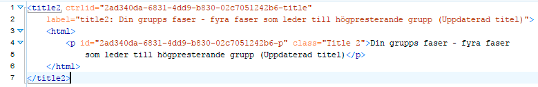
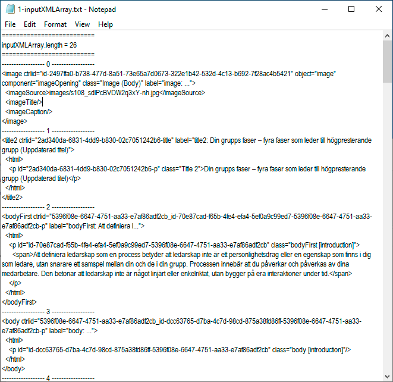
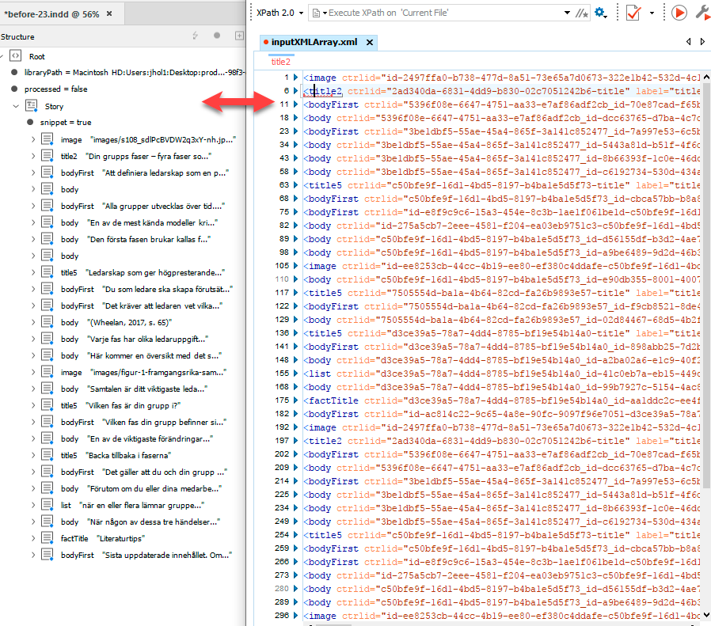
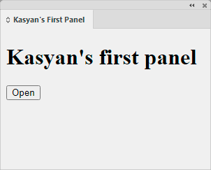
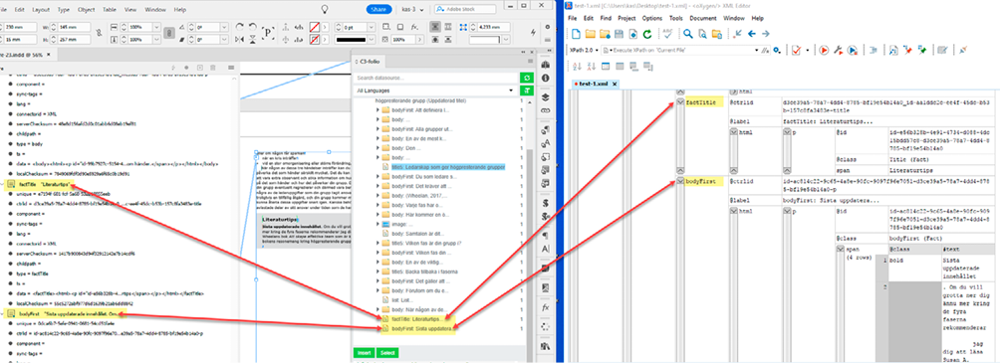

Reworking a CEP panel into a script for the InDesign server
Here are my thoughts aloud regarding while reworking a CEP panel into a script for the InDesign server:
There’s no way to interact with controls in panels in InDesign by script: for instance, you cannot select/deselect the links in the ‘Links’ panel. It’s also impossible to click the ‘Insert’ button in the C3 panel as you wanted so I tried to imitate this behavior programmatically.
There are two sides of a CEP extension: the host (InDesign app) and the client. (the web application built-in into InDesign)
The host side is more or less clear to me. I found out that the code is partially hidden because the following two files are in binary format:
- CCRCleanStructure.jsxbin
- CtrlHTMLTransformer.jsxbin
I guess the programmer who developed this extension didn’t want to expose the code.
My script reads the whole XML file you sent me for testing, and extracts the title2 element via xpath, as if you selected it in the panel.
Finally, It converts it to XML string, encodes it, and sends it to c3core.jsx: the insertDataInSelection function which receives input as an encoded (unreadable) string, like so:

Then it decodes the string using deserializeB64Array which results in an array of XML objects:

With the title2 element selected in the C3 panel, after this decoding, I get a readable XML format:

However, with the whole thing — the chapter element — selected in the C3 panel, I get a more complex structure — an array of 26 elements — that after some reconstruction (by script) looks like this:

These are the elements that are inserted into the template one by one.

But this is the input that the host receives from the client side.
Before getting down to this project I read in a perfunctory manner the documentation and made a couple of simple tutorials to have a basic idea about how cep extensions work. I even made my 1st CEP extension that simply opens a file.

But I just scratched the surface: no more.
I also read the documentation for C3. Google translated it from Swedish.
I guess that the client’s side reads the selected XML file and processes it.
I just compared carefully the result after hitting the insert button with the whole thing — the chapter element — selected in the C3 panel, with your opening_asset_bb088a58-9b8a-4b9e-98f3-ed9e48bf7cdd.xml file and found out that everything — in the structure panel, C3 panel and the original XML — matches exactly! So, I can take the chapter element and process its sub-elements one by one inserting them into the template and I should get the same result as manually in C3. I will try this in the next version.

Since this script is intended for the InDesign server, I disabled selection because selections are not available there.
Currently, the script uses (instead of selection), the first insertion point of the first text frame on the first page (as if the user clicked in the text frame placing the cursor there). In the future, we can use a labeled text frame so the script would know where to place all the stuff.